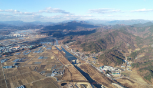
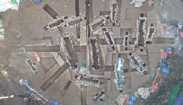
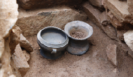
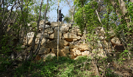

문화재 조사절차
지표조사
건설 공사 시행자의 의뢰로 해당 건설공사 지역에 문화유산 매장·분포 사전 조사
참관조사
관련전문가가 공사현장에 참관하여 매장유산의 존재 여부를 확인하는 조사
표본·시굴조사
건설공사 면적 중, 일부에서 매장유산 유존 여부를 확인하는 조사
발굴조사
건설공사 면적 중, 매장유산 유존지역 면적 전체에 대한 매장유산 조사
현장공개
+ 더보기 (준비 중)공지사항
+ 더보기 (준비 중)유적 갤러리
+ 더보기 (준비 중)


